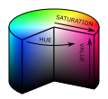

HSV Boosting
Doom 64 boosts the brightness of levels by adjusting the sector colors. Here the game converts the colors in the red-green-blue, RGB, space to the hue-saturation-value, HSV, space and increases the value component. Although related to the hue-saturation-lightness (HSL) color space, the value component (sometimes called brightness) behaves differently than the lightness component. In HSL, boosting the lightness component will eventually cause all colors to become white. In contrast, in HSV, the value component will never turn a saturated color to white, rather it will retain its color. In most Doom 64 ports, this is a slider labeled as "Brightness", while the Doom 64 Remaster labels this as "Environmental Brightness". The Doom 64 Remaster adds an additional brigntess slider called "Overall Brightness", which also uses the HSV method to boost brightness, however it acts on on-screen pixels which effectively boosts the texture and sky brightness too. To avoid confusion, the more-common map brightness boost will be refered to as "Environmental Brightness".
HSV Calculator
For Doom 64, each HSV component has values from 0 to 255 which is different than the typical degree and percent representation. There are some small rounding errors due to integer math which occur in the game's RGB to HSV and back conversion which is preserved in the subsequent calulator.
The environmental brightness slider effectively multiplies the HSV value of the sector colors. If the brightness is set to 0, the HSV value will be unchanged, if the brightness value is 100 then the HSV value is doubled. Then if the player has the light amplification goggles the HSV value is quadrupled. Thus if the HSV value is greater than 64, the shade is considered bright as it will achieve maximum brightness (255) with the light amplification goggles. And if the HSV value is greater than 128, the shade is considered overbright as it will achieve maximum brightness when the brightness is set to 100. Overbright shades at maximum environmental brightness are unaffected by light amplification goggles.